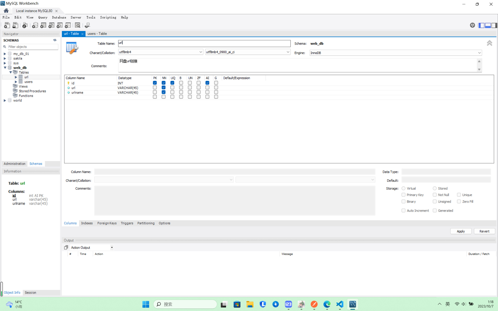

项目地址：👉GitHub项目地址🐬
1. 申请域名 (可以在eu.org申请永久免费域名) -> 链接：
👉eu.org🐬【这个网址注册的域名 需要等半个多月才能得到，有钱的话也可以直接去买域名】
需要用到mg地址 -> 链接：
👉随机生成mg地址🐬
2. 添加DNS解析域名【阿里云或者腾讯云等等】 (可以在eu.org申请永久免费域名) -> 链接：
👉腾讯云🐬
阿里云 -> 链接：
👉阿里云🐬
3. 域名解析IP地址 (有钱就买服务器，没钱就内网穿透) -> 内网穿透链接：
👉内网穿透🐬
服务器购买也有很多：阿里、腾讯、微软、谷歌等等等...
腾讯云添加域名后 添加记录【还有frp创建隧道】
温馨提示：创建的隧道类型为HTTP/HTTPS的话，腾讯云添加记录 一般是添加一个IPV4的IP地址【A】
创建的隧道类型为TCP/UDP的话，腾讯云添加记录 一般是添加SRV服务【SRV】其他的自己看。。。
4. 需要把项目中的域名、端口换成自己的域名、端口
5. 需要把项目中的QQ邮箱服务换成自己的【请合法使用我的邮箱，谢谢！！！】-> QQ邮箱：
👉QQ邮箱🐬

6. 配置数据库【使用MySQL，SQL，MogoDB都可以】-> 以MySQL为例：
👉MySQL🐬
配置url和users这些问题【名字需要根据代码来改变】，需要根据自己情况来设置，跟我一样也行/dog

7. 启动项目【全局安装nodemon，安装命令是: npm i nodemon -g】终端输入 nodemon .js文件路径，运行即可